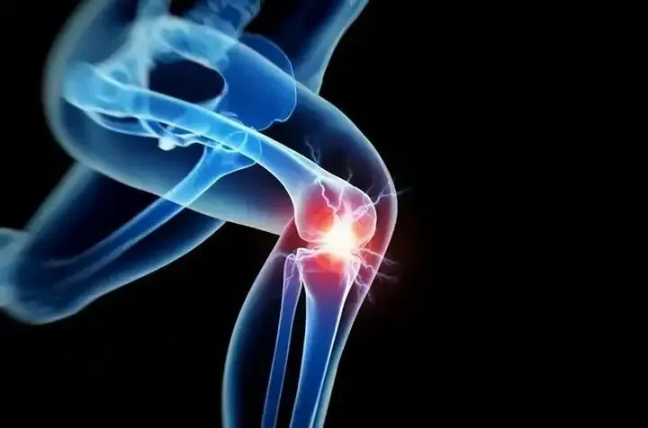
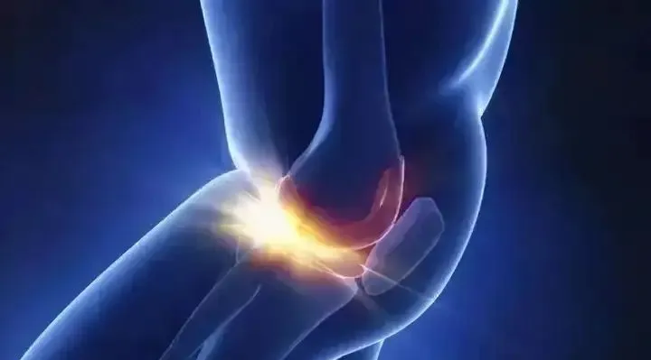
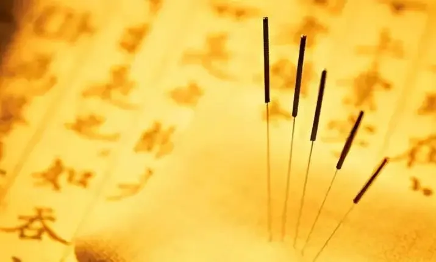
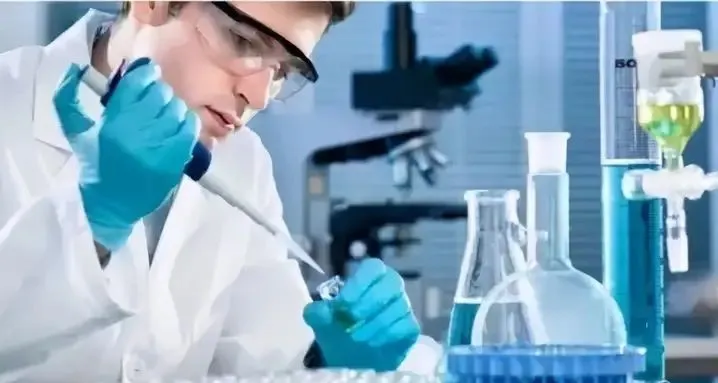
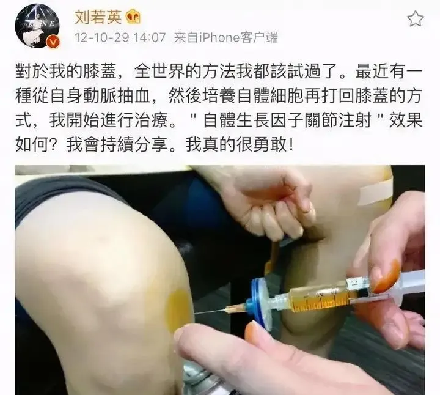

年后肝"负重"？百年春护肝美颜能量抗衰老针——给肝"松绑"，让脸发光！
2026-03-01

About Us
关于百年春
骨关节炎是最常见的关节疾病。世界骨关节炎患者约3.55亿人，而我国大概占了三分之一，约为1.2亿人，平均每10人就有1人患病。随着近年来患病人群的逐渐增多，骨关节炎的治疗也成为许多患者关心的问题。

01
何为骨关节炎？
骨性关节炎以关节软骨变性、损害为主，最终导致关节退变、骨质增生的慢性骨关节疾病。特征是软骨破坏和骨质增生。
简单来说，是一种关节老化、蜕变、磨损加重而引起的病理现象，临床表现为缓慢发展的关节疼痛、压痛、僵硬、关节肿胀、活动受限和关节畸形等，素有“致残杀手”之称。

02
传统治疗骨关节炎的方式？
药物治疗
以非甾体类镇痛抗炎药（比如阿司匹林、吲哚美辛、双氯芬酸等)以及关节腔内注射激素(比如地塞米松、泼尼松等)、软骨保护剂(玻璃酸钠注射液)为主。
非药物治疗
包括针灸理疗等。骨关节炎属于中医“痹证”范畴，在临床上是中医风湿科的优势病种之一。

这些治疗方法效果有限，而且不能阻止关节局部病变的进展，最终发展至关节功能完全丧失时需要行人工关节置换，但置换的关节属于人工关节，并不能完全代替自身关节。因此，寻找一种有效干预骨关节炎方法成为该领域的研究热点之一。
03
干细胞两种机制有效治疗骨关节炎
随着再生医学技术的发展，干细胞疗法在软骨缺损以及促进软骨再生领域已获得10多年安全性及有效性检验。
干细胞作为一种具有多项分化潜能的种子细胞，近年来已显示出其在治疗骨关节炎软骨病变中的优势。主要通过两种作用机制有效治疗骨关节炎。
①干细胞通过多向分化潜能直接修复受损组织。干细胞在体内外特定诱导条件下转化成骨细胞，软骨细胞，进行骨关节软骨修复。
②干细胞通过分泌多种因子，如转化生长因子-β1、胰岛素样生长因子-1等诱导干细胞自身向软骨细胞分化，抑制局部炎症发展，促进局部受损组织自身修复能力，从而达到干预目的。
2009年，比利时TiGenix公司开发的产品ChondroCelect是一种自体软骨来源细胞制品），被批准用于干预膝盖软骨修复。2012年，韩国一款主要成分为脐带血间充质干细胞的干细胞制剂Cartistem，被批准用于干预退行性关节炎和干预受损膝盖软骨。2017年10月，《美国运动医学杂志》刊发了Chris Hyunchul Jo 等韩国学者一篇文章。结果表明，在2年时间随访期内，通过关节腔注射自体干细胞干预膝关节炎是安全、有效的。

除此之外，明星也都在尝试干细胞治疗骨关节炎。
刘若英——接受“自体干细胞注射”治疗髌骨外翻
天后级台湾歌手刘若英，多年来饱受髌骨外翻之苦，即使动手术仍然未能完全恢复。
刘若英曾经透露，这是中学毕业时车祸伤到左膝的旧伤，本来不以为意。后来习惯用右脚支撑，没想到恶化，变成右膝外翻，状况比左膝还严重。
直到2012年她接受了新的治疗方式即“自体干细胞注射”，病情才得以好转。她还在微博秀出照片时介绍：“对于我的膝盖，全世界的方法我都试过了。”

C罗——接受“自体干细胞注射”治疗骨关节磨损
赛场上雄姿英发的C罗，也躲不过病痛的折磨。这几年里，骨关节损伤折磨一直困扰着C罗。
所幸的是，C罗听从医生建议采用先进的自体干细胞疗法来医治伤痛，效果显著。可以说，干细胞让C罗再次霸气称王！
以上案例都表明，干细胞在治疗骨关节炎方面的巨大价值，相信随着研究的深入，对干细胞的了解将更为全面和深刻，不久的将来，更高证据水平的研究和更突破性的细胞治疗技术会进一步推动这一技术的发展，干细胞会被广泛应用于骨性关节炎的治疗。